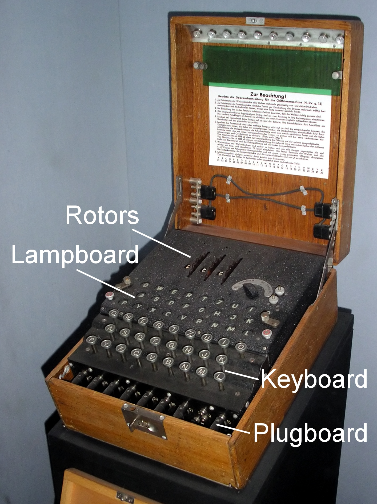
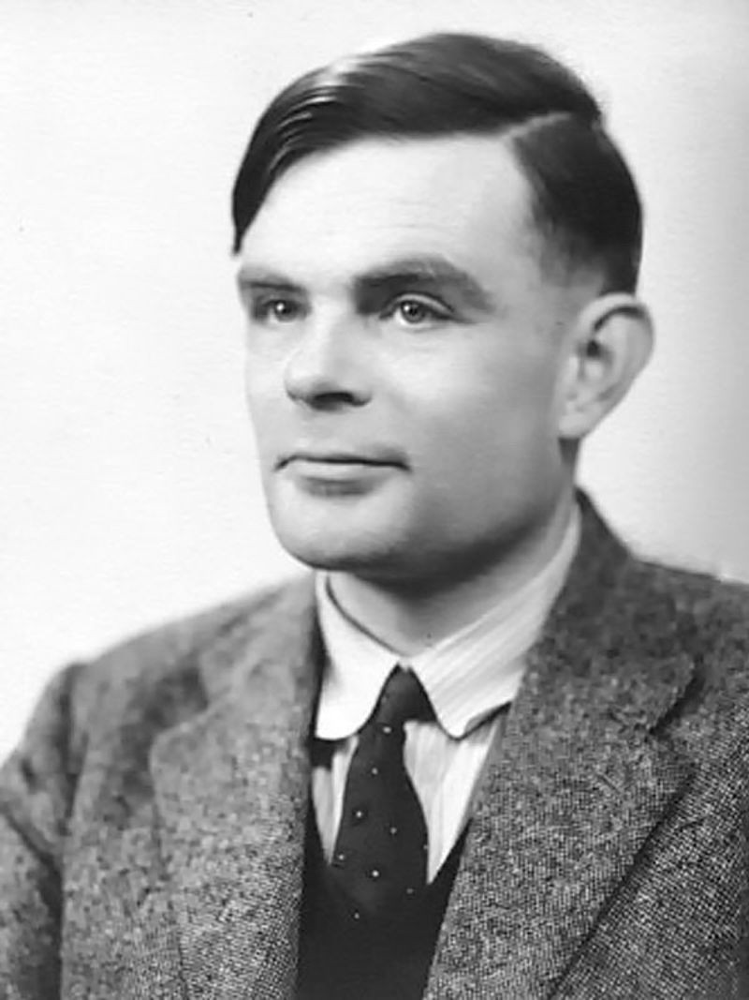
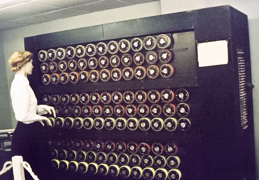
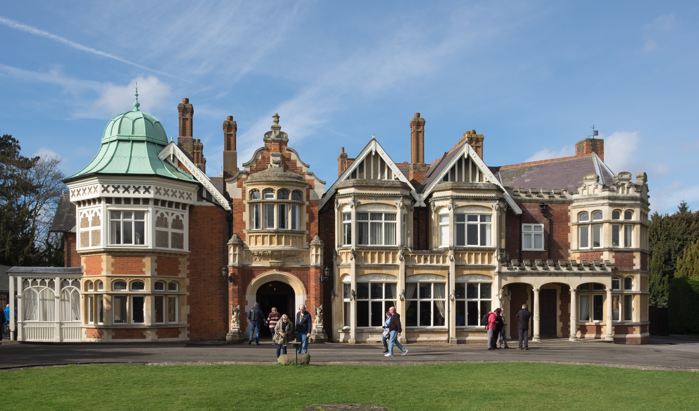

Redes e Sistemas de Segurança de Informação (RSSI) — Aula 6
Por que HTTPS esconderia a senha capturada
Na demonstração ao vivo da Aula 4, capturamos GET /login?usuario=aluno&senha=SenhaSecreta123 inteiro, legível, na captura do atacante. Na hora, prometemos: "se fosse HTTPS, essa captura não mostraria nada legível". Hoje entendemos exatamente por quê.
HTTPS nada mais é que HTTP com uma camada de criptografia por baixo (TLS). Pra entender como ela esconde a senha até de quem está no meio do caminho (MITM, Aula 3), precisamos entender os dois tipos de criptografia que existem — e por que precisamos dos dois.
Texto legível vira ilegível, e volta com a chave certa
Criptografia é o processo de transformar um texto legível (texto claro) num texto ilegível (texto cifrado), usando uma chave — e só quem tem a chave certa consegue reverter o processo e ler o conteúdo original de novo.
Criptografia é a ferramenta técnica por trás da Confidencialidade — garantir que só quem deveria ler os dados consegue lê-los, mesmo que eles sejam interceptados no caminho (como no MITM da Aula 3).
Enigma, Alan Turing, a Bombe e O Jogo da Imitação
Criptografia não nasceu com a internet. Na Segunda Guerra Mundial, a Alemanha usava uma máquina eletromecânica chamada Enigma pra cifrar mensagens militares: um teclado, um painel de luzes e um conjunto de rotores que giravam a cada tecla digitada, trocando cada letra por outra de um jeito que mudava a cada caractere.

O segredo da Enigma era a posição inicial dos rotores e dos cabos do painel — essa configuração era o equivalente à "chave" de hoje, trocada todo santo dia. Quem cifrava e quem decifrava precisava saber exatamente a mesma configuração: era criptografia simétrica, só que feita com engrenagens em vez de bits.

Alan Turing trabalhou em Bletchley Park, o centro britânico de decifração de códigos, durante a guerra. Os alemães confiavam que a Enigma era "impossível de quebrar": o número de configurações possíveis de rotores e cabos era astronômico — bilhões e bilhões de combinações.
Testar todas as combinações na mão levaria mais tempo do que a própria guerra — ou assim os alemães pensavam.

Turing projetou a Bombe, uma máquina eletromecânica capaz de testar automaticamente milhares de configurações do Enigma por hora — muito mais rápido do que qualquer time humano faria na mão.
A Enigma tinha uma peculiaridade matemática: nenhuma letra podia ser cifrada como ela mesma (um "A" nunca virava "A"). Combinado com frases previsíveis que os operadores alemães repetiam todo dia (como o boletim do tempo), essa fraqueza foi o que a Bombe conseguiu explorar sistematicamente pra descobrir a chave do dia.

O filme O Jogo da Imitação (2014), com Benedict Cumberbatch no papel de Alan Turing, retrata esse trabalho em Bletchley Park. Numa cena marcante, a equipe percebe que os alemães sempre encerravam certas mensagens com a mesma frase previsível — esse trecho conhecido de antemão (um "crib") foi o que deu à Bombe um ponto de partida pra quebrar a chave do dia.
Vale muito assistir: historiadores estimam que esse trabalho encurtou a guerra em anos, salvando milhões de vidas, e o filme mostra bem a lógica de explorar padrões e fraquezas de uma cifra — o mesmo raciocínio que ainda usamos hoje pra analisar a segurança de um sistema criptográfico.
Uma única chave — rápida, mas com um problema
Pensa num cofre com uma única chave: quem guarda algo lá dentro e quem vai pegar depois precisam ter uma cópia da mesma chave. É exatamente assim que funciona a criptografia simétrica — o algoritmo mais usado hoje é o AES (Advanced Encryption Standard).
Criptografia simétrica é rápida e leve — ideal pra cifrar grandes volumes de dados o tempo todo, como o tráfego inteiro de uma conexão HTTPS depois que ela já foi estabelecida.
Pra ver criptografia simétrica funcionando com uma chave bem simples, esquece o AES por um instante: a cifra de César desloca cada letra um número fixo de posições no alfabeto. Esse número é a chave — e é a MESMA chave que cifra e decifra, exatamente como no Enigma.
Pra decifrar "RL", anda 3 posições PRA TRÁS: R volta pra O, L volta pra I. Só quem sabe que a chave é 3 consegue reverter — e é exatamente essa mesma lógica (chave única, usada nos dois sentidos) que o AES usa, só que com uma matemática bem mais complexa.
Se as duas partes precisam da MESMA chave antes de começar a se comunicar com segurança, como uma manda essa chave pra outra pela rede, sem que alguém consiga interceptar a própria chave no meio do caminho?
Se você manda a chave secreta em texto puro pela rede, um atacante posicionado no meio (exatamente como no ARP spoofing da Aula 3/4) simplesmente copia a chave enquanto ela passa — e a partir daí lê tudo que for cifrado com ela. Criptografia simétrica sozinha não resolve esse problema — só o adia.
Par de chaves pública/privada
Criptografia assimétrica usa um par de chaves matematicamente ligadas: uma pública (pode ser espalhada livremente, sem medo) e uma privada (fica guardada, nunca sai do dono). O algoritmo mais conhecido é o RSA.
A chave pública é como um cadeado aberto que você distribui pra qualquer um: qualquer pessoa pode pegar esse cadeado e fechar uma caixa com ele. Mas só quem tem a chave privada correspondente consegue abrir essa caixa de novo. Não importa quem intercepte o cadeado (chave pública) no caminho — sem a chave privada, ele não abre nada.
Ninguém precisa combinar segredo nenhum antes: a chave pública pode ser vista por todo mundo, inclusive por um atacante no meio do caminho — e isso não compromete a segurança.
RSA não é uma sigla aleatória: são as iniciais de Rivest, Shamir e Adleman, os três pesquisadores do MIT que publicaram o algoritmo em 1977. Ele vem da Teoria dos Números, o ramo da Matemática que estuda os números inteiros — sobretudo os números primos — hoje aplicada à criptografia de chave pública.
A cifragem em si é só uma função matemática direta de calcular: exponenciação modular (elevar um número a uma potência e pegar o resto da divisão) — a mesma conta que fizemos no Mini-RSA. A parte sofisticada não é cifrar; é como as duas chaves são geradas.
As duas chaves nascem de dois números primos bem grandes (centenas de dígitos), multiplicados pra formar o número n usado nas chaves. Só quem gerou o par conhece esses dois primos originais.
Calcular a chave privada a partir da pública exigiria fatorar n de volta nos dois primos que o formaram. No Mini-RSA isso é trivial (33 = 3 × 11) — por isso ele só serve de exemplo. Com primos de centenas de dígitos, fatorar n levaria mais tempo que a idade do universo nos computadores de hoje. Essa dificuldade matemática — não um segredo escondido — é o que garante a segurança do RSA.
O RSA de verdade usa números com centenas de dígitos — mas a lógica matemática por trás dele dá pra ver com números bem pequenos. Vamos cifrar um único número (2) com uma chave pública minúscula, e decifrar de volta com a chave privada correspondente.
| Chave Pública | Chave Privada | |
|---|---|---|
| Valores | n = 33, e = 7 | n = 33, d = 3 |
Cifrar com a chave publica (n=33, e=7):
c = 2^7 mod 33 = 128 mod 33 = 29
Decifrar com a chave privada (n=33, d=3):
m = 29^3 mod 33 = 24389 mod 33 = 2Qualquer pessoa com a chave pública (n=33, e=7) consegue cifrar o número 2 e chegar em 29 — mas só quem tem a chave privada (d=3) consegue voltar de 29 pra 2. Essa "via de mão única, a não ser que você tenha a chave certa" é a mesma ideia do cadeado aberto do slide anterior, só que expressa em matemática.
Se a assimétrica resolve o problema da simétrica, por que não abandonar a simétrica de vez?
As operações matemáticas por trás da criptografia assimétrica são muito mais pesadas computacionalmente que as da simétrica. Cifrar o tráfego inteiro de uma conexão só com RSA seria lento demais pra ser prático.
Como os dois se combinam na prática
O HTTPS não escolhe entre simétrica e assimétrica — ele usa as duas, cada uma no momento certo: a assimétrica resolve o problema de combinar uma chave em segurança; a simétrica cuida do volume de tráfego, rápido, dali em diante.
Com HTTPS ativo, mesmo com o ARP spoofing posicionando o atacante no meio do caminho (Aula 3/4), o GET /login?usuario=aluno&senha=... estaria cifrado com a chave de sessão simétrica — uma chave que só a vítima e o servidor real combinaram. O atacante interceptaria só ruído ilegível, não a senha.
Repare: o ARP spoofing continua funcionando exatamente igual — o atacante continua no meio do caminho. O que muda é que agora não há mais nada legível pra ele ler ali.
Resumo comparativo e prévia da Aula 7
| Simétrica | Assimétrica | |
|---|---|---|
| Chaves | 1 única chave | Par (pública + privada) |
| Velocidade | Rápida | Lenta |
| Problema | Como combinar a chave em segurança | Nenhum pra distribuição |
| Exemplo | AES (e a Enigma, mecanicamente) | RSA |
| Uso no HTTPS | Cifra o tráfego (volume) | Cifra só a troca da chave de sessão |
Na Aula 7 vamos ver como garantir que os dados não foram alterados no caminho (hashes), como provar quem realmente enviou algo (assinaturas digitais) e como o navegador confia na chave pública de um site (certificados digitais).
n de volta nos dois primos originais é tão difícil quando eles são grandes, mas trivial no Mini-RSA (n=33)?